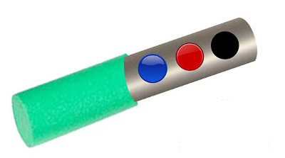
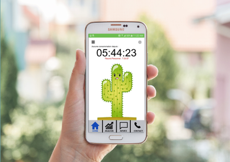
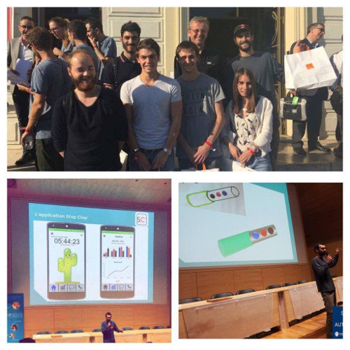

Stop Clop'
Stop Clop'
Stop Clop'
Stop Clop'

Le stick Stop Clop' vous aide à gérer vos envies. Cet objet connecté est composé de 3 boutons :

L’application est composée d’un jeu ludique. En effet lorsque vous vous munissez d’elle vous faites alors la rencontre d’un cactus, il réagira en fonction de votre consommation, moins le consommateur fume, plus le cactus va bien, et à l’inverse s’il consomme beaucoup le cactus ira de plus en plus mal.

Toute l’équipe de Stop Clop' a récemment participé au Hackathon Santé organisé par Neuroplanète ainsi que la ville de Nice. Nous avons remporté lors de cette évenement le second prix : Le prix Orange.
Suivez nous sur Facebook : Stop Clop'